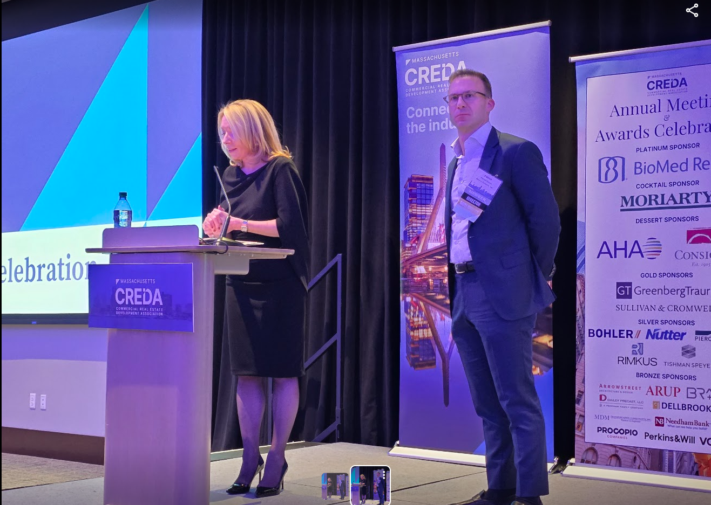

01
韦斯顿电力选择
Weston Power Choice
韦斯顿电力选择是一个城镇电力供应计划，旨在为居民和企业主提供更多选择和控制权。
Weston Power Choice is a Town electricity supply program that gives residents and business owners more choice and control over how we power our community.
Town of Weston Massachusetts · 2026-11-05
原始报道 / Original source ↗02

公羊明星外接手的任期“可能结束”
Rams star wide receiver’s tenure ‘probably ending’ according to NFL insider
NFL内部人士表示，公羊明星外接手的任期“可能结束”。
Could the Patriots enter the bidding war for Puka Nacua?
Boston.com · 2026-11-22
原始报道 / Original source ↗03

计划在波士顿北部郊区交通中心建设近600个住房单元
Almost 600 housing units planned for suburban transpo center north of Boston
马萨诸塞州港务局已批准在沃本的安德森区域交通中心进行混合用途项目。
Massport has approved a developer for a mixed-use project at the Anderson Regional Transportation Center in Woburn.
Boston.com · 2026-11-21
原始报道 / Original source ↗04

CREDA马萨诸塞州任命帕特里克·苏萨为2027年主席；梅丽莎·施罗克担任董事会主席
CREDA Massachusetts Names Patrick Sousa 2027 President; Melissa Schrock to Serve as Board Chair
商业房地产协会选举新领导，欢迎17名董事会成员，并表彰马萨诸塞州的行业领袖和杰出开发项目。
Commercial real estate association elects new leadership, welcomes 17 board members and recognizes industry leaders and outstanding development projects across Massachusetts.
Boston Real Estate Times · 2026-11-20
原始报道 / Original source ↗05

FBI调查其关键国家刑事司法数据库的明显黑客事件
FBI investigating apparent hack of its key national criminal justice database, AP source says
据美联社消息，FBI正在调查其关键国家刑事司法数据库的明显黑客事件。
FBI is investigating an apparent hack of its key national criminal justice database.
Boston.com · 2026-11-21
原始报道 / Original source ↗